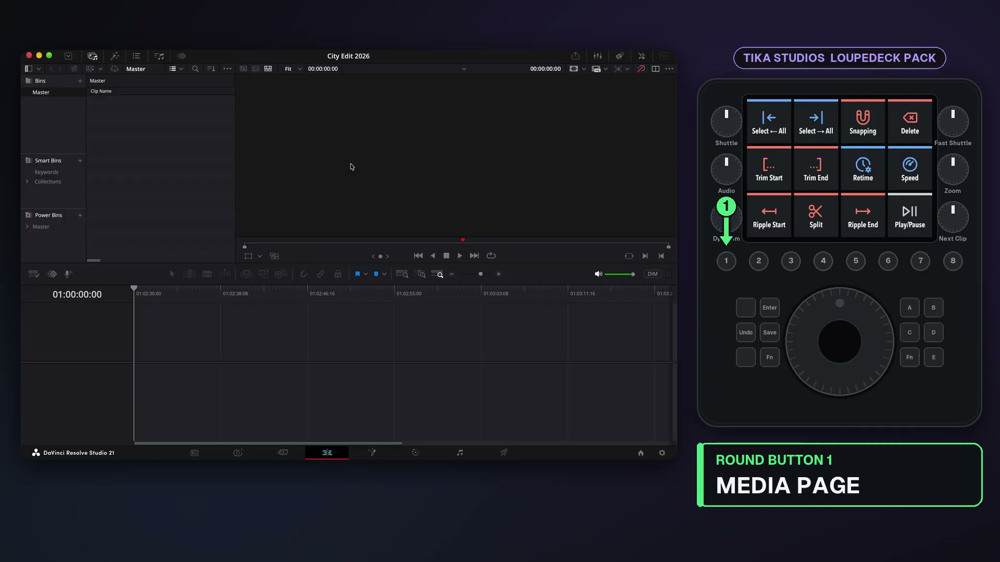
Exact walkthrough frame · click to enlarge#001 · Navigation
Media page
- Control
- Round button 1
- What it does
- Opens the Media / project-management page.
- Edition
- Both editions
- Video evidence
- 00:00:34–00:01:05
Source-audited visual catalog
Every row pairs one documented mapping or selectable option with an untouched frame from the supplied walkthrough, so you can confirm the control label and CT location visually.
How to read this file: “Mapped actions & options” counts separate physical assignments, timer choices, color choices, and render presets. It is deliberately higher than a count of unique Resolve commands because the same behaviour can be reachable from more than one CT control. Every image is a direct, unedited still extracted from the supplied video. Studio-only and Free-edition differences are marked row by row.

Exact walkthrough frame · click to enlarge#001 · Navigation
#002 · Navigation
#003 · Navigation
#004 · Navigation
#005 · Navigation
#006 · Navigation
#007 · Navigation
#008 · Navigation
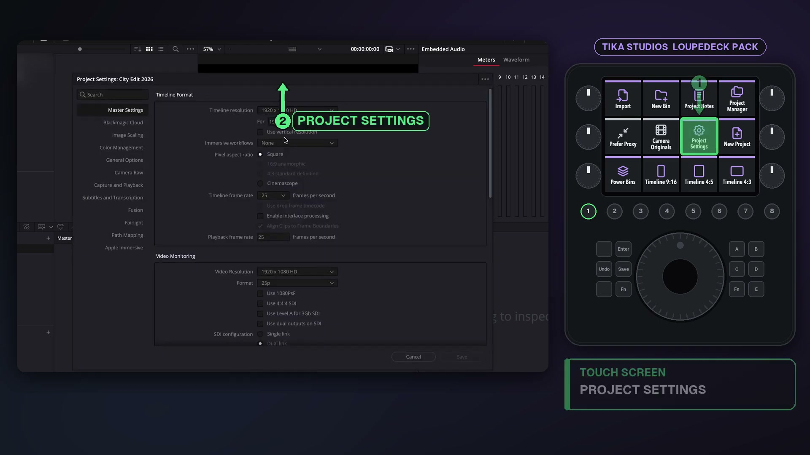
Exact walkthrough frame · click to enlarge#009 · Media / Project
#010 · Media / Project
#011 · Media / Project
#012 · Media / Project
#013 · Media / Project
#014 · Media / Project
#015 · Media / Project
#016 · Media / Project
#017 · Media / Project
#018 · Media / Project
#019 · Media / Project
#020 · Media / Project
#021 · Media / Project
#022 · Media / Project
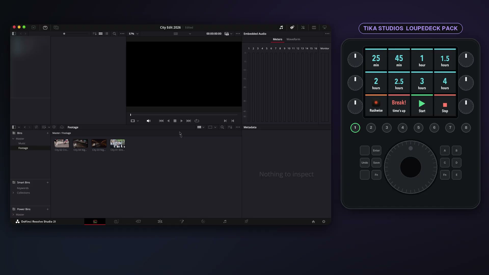
Exact walkthrough frame · click to enlarge#023 · Media / Break Timer
#024 · Media / Break Timer
#025 · Media / Break Timer
#026 · Media / Break Timer
#027 · Media / Break Timer
#028 · Media / Break Timer
#029 · Media / Break Timer
#030 · Media / Break Timer
#031 · Media / Break Timer
#032 · Media / Break Timer
#033 · Media / Break Timer
#034 · Media / Break Timer
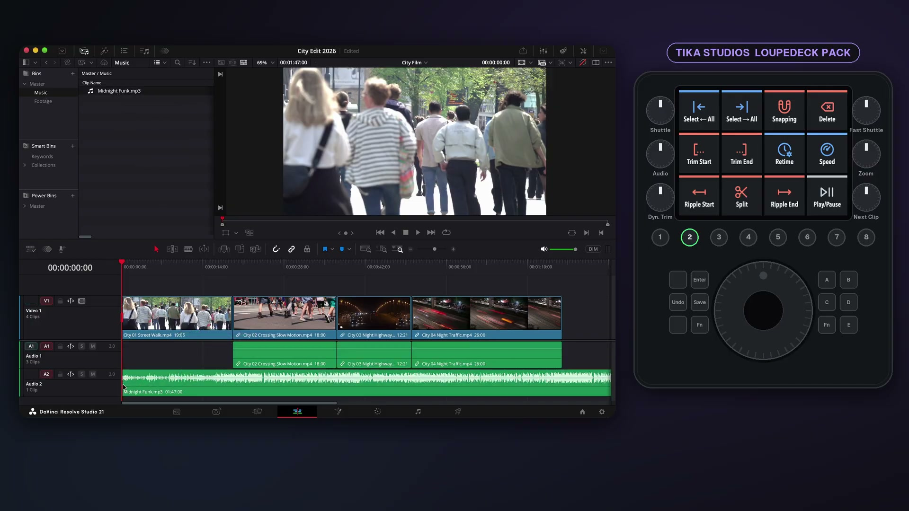
Exact walkthrough frame · click to enlarge#035 · Edit 1
#036 · Edit 1
#037 · Edit 1
#038 · Edit 1
#039 · Edit 1
#040 · Edit 1
#041 · Edit 1
#042 · Edit 1
#043 · Edit 1
#044 · Edit 1
#045 · Edit 1
#046 · Edit 1
#047 · Edit 1
#048 · Edit 1
#049 · Edit 1
#050 · Edit 1
#051 · Edit 1
#052 · Edit 1
#053 · Edit 1
#054 · Edit 1
#055 · Edit 1
#056 · Edit 1
#057 · Edit 1
#058 · Edit 1
#059 · Edit 1
#060 · Edit 1
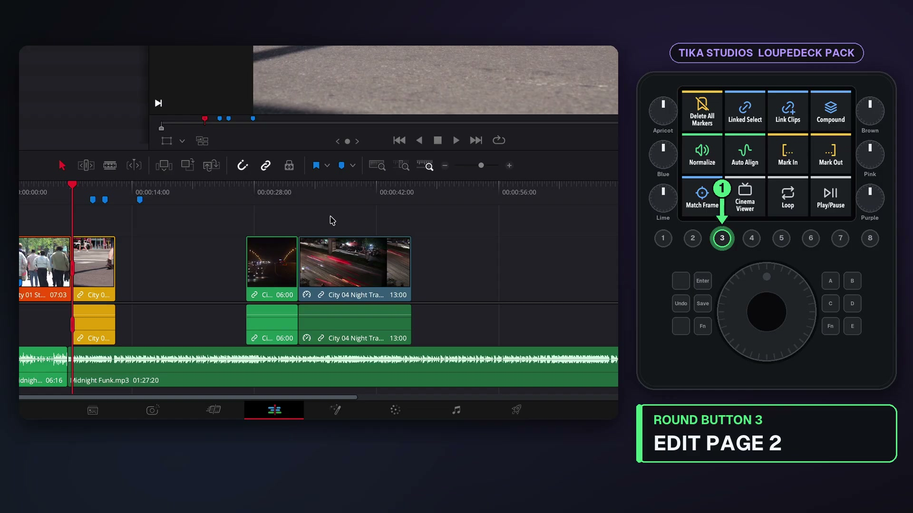
Exact walkthrough frame · click to enlarge#061 · Edit 2
#062 · Edit 2
#063 · Edit 2
#064 · Edit 2
#065 · Edit 2
#066 · Edit 2
#067 · Edit 2
#068 · Edit 2
#069 · Edit 2
#070 · Edit 2
#071 · Edit 2
#072 · Edit 2
#073 · Edit 2
#074 · Edit 2
#075 · Edit 2
#076 · Edit 2
#077 · Edit 2
#078 · Edit 2
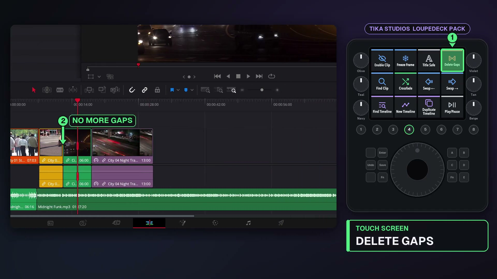
Exact walkthrough frame · click to enlarge#079 · Edit 3
#080 · Edit 3
#081 · Edit 3
#082 · Edit 3
#083 · Edit 3
#084 · Edit 3
#085 · Edit 3
#086 · Edit 3
#087 · Edit 3
#088 · Edit 3
#089 · Edit 3
#090 · Edit 3
#091 · Edit 3
#092 · Edit 3
#093 · Edit 3
#094 · Edit 3
#095 · Edit 3
#096 · Edit 3
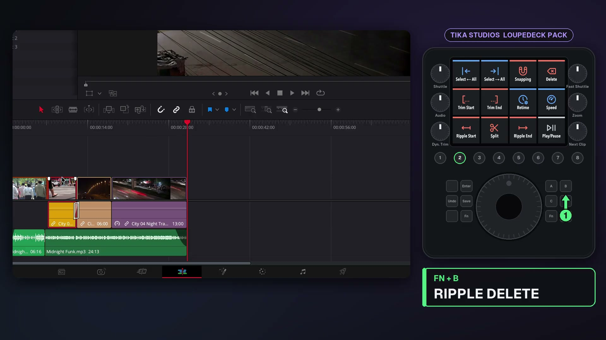
Exact walkthrough frame · click to enlarge#097 · Physical keys & Fn layer
#098 · Physical keys & Fn layer
#099 · Physical keys & Fn layer
#100 · Physical keys & Fn layer
#101 · Physical keys & Fn layer
#102 · Physical keys & Fn layer
#103 · Physical keys & Fn layer
#104 · Physical keys & Fn layer
#105 · Physical keys & Fn layer
#106 · Physical keys & Fn layer
#107 · Physical keys & Fn layer
#108 · Physical keys & Fn layer
#109 · Physical keys & Fn layer
#110 · Physical keys & Fn layer
#111 · Physical keys & Fn layer
#112 · Physical keys & Fn layer
#113 · Physical keys & Fn layer
#114 · Physical keys & Fn layer
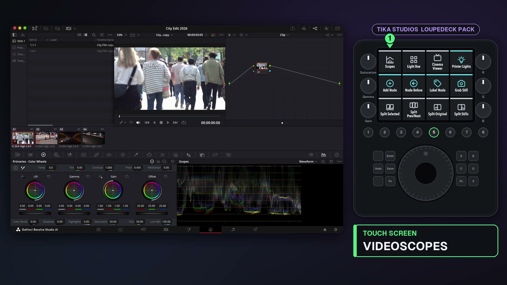
Exact walkthrough frame · click to enlarge#115 · Color
#116 · Color
#117 · Color
#118 · Color
#119 · Color
#120 · Color
#121 · Color
#122 · Color
#123 · Color
#124 · Color
#125 · Color
#126 · Color
#127 · Color
#128 · Color
#129 · Color
#130 · Color
#131 · Color
#132 · Color
#133 · Color
#134 · Color
#135 · Color
#136 · Color
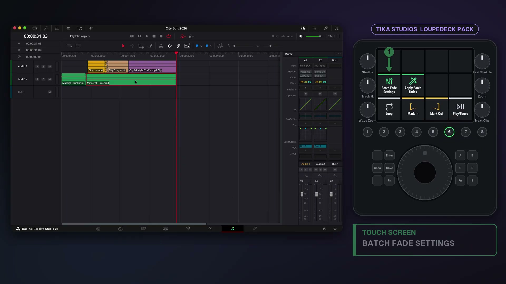
Exact walkthrough frame · click to enlarge#137 · Fairlight
#138 · Fairlight
#139 · Fairlight
#140 · Fairlight
#141 · Fairlight
#142 · Fairlight
#143 · Fairlight
#144 · Fairlight
#145 · Fairlight
#146 · Fairlight
#147 · Fairlight
#148 · Fairlight
#149 · Fairlight
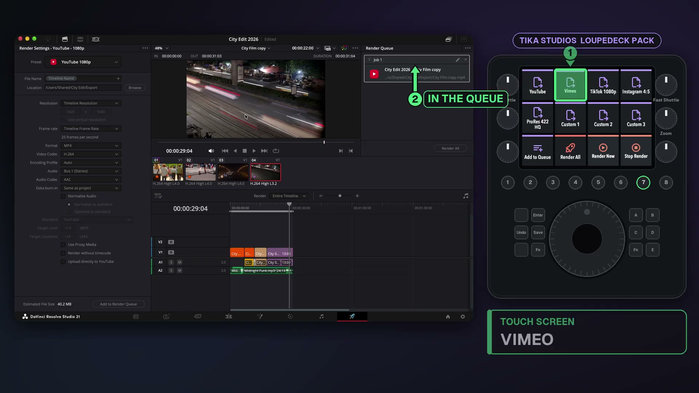
Exact walkthrough frame · click to enlarge#150 · Deliver / Render Queue
#151 · Deliver / Render Queue
#152 · Deliver / Render Queue
#153 · Deliver / Render Queue
#154 · Deliver / Render Queue
#155 · Deliver / Render Queue
#156 · Deliver / Render Queue
#157 · Deliver / Render Queue
#158 · Deliver / Render Queue
#159 · Deliver / Render Queue
#160 · Deliver / Render Queue
#161 · Deliver / Render Queue
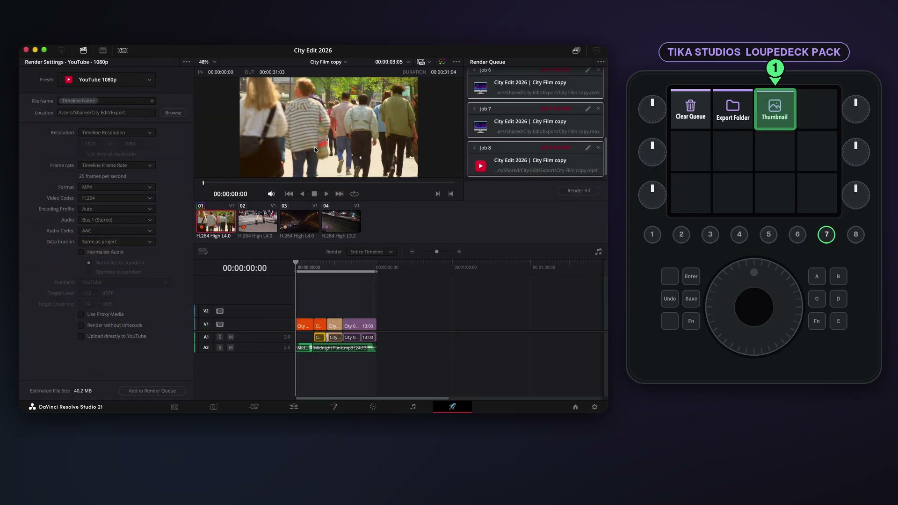
Exact walkthrough frame · click to enlarge#162 · Deliver / Render Queue
#163 · Deliver / Render Queue
#164 · Deliver / Render Queue
#165 · Deliver / Render Queue
#166 · Deliver / Render Queue
#167 · Deliver / Render Queue
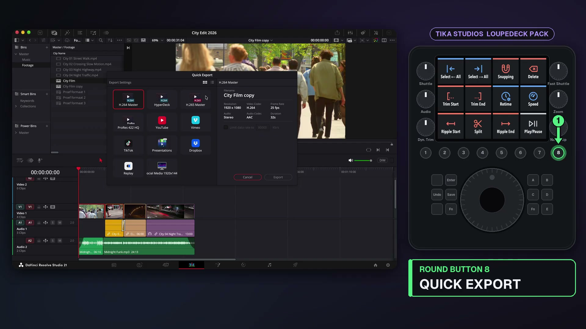
Exact walkthrough frame · click to enlarge#168 · Quick Export